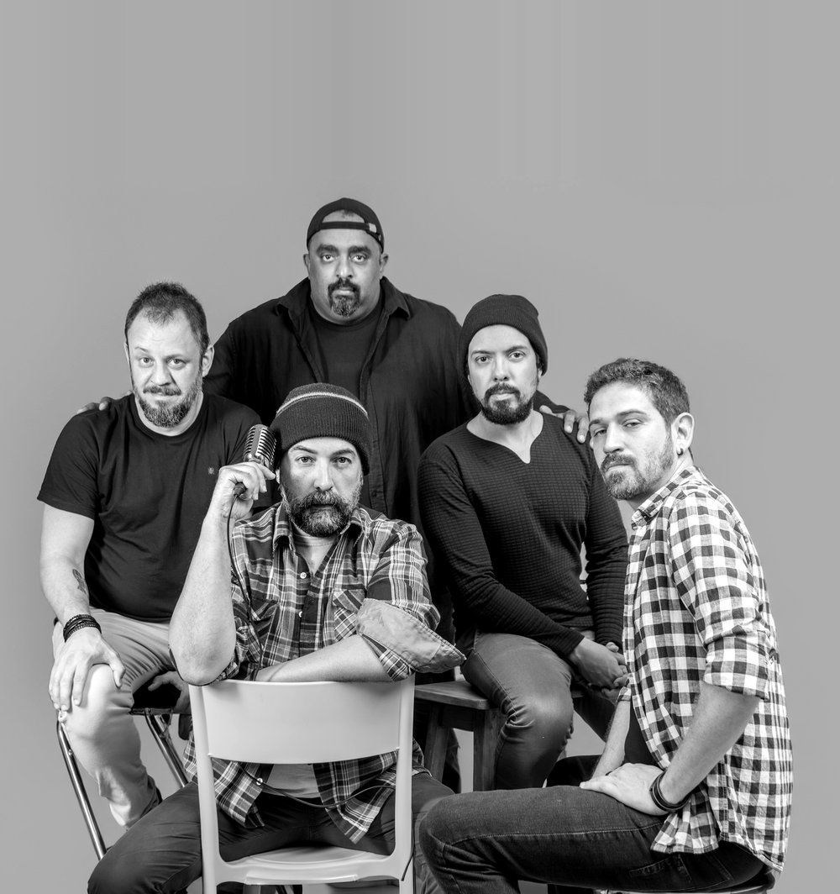
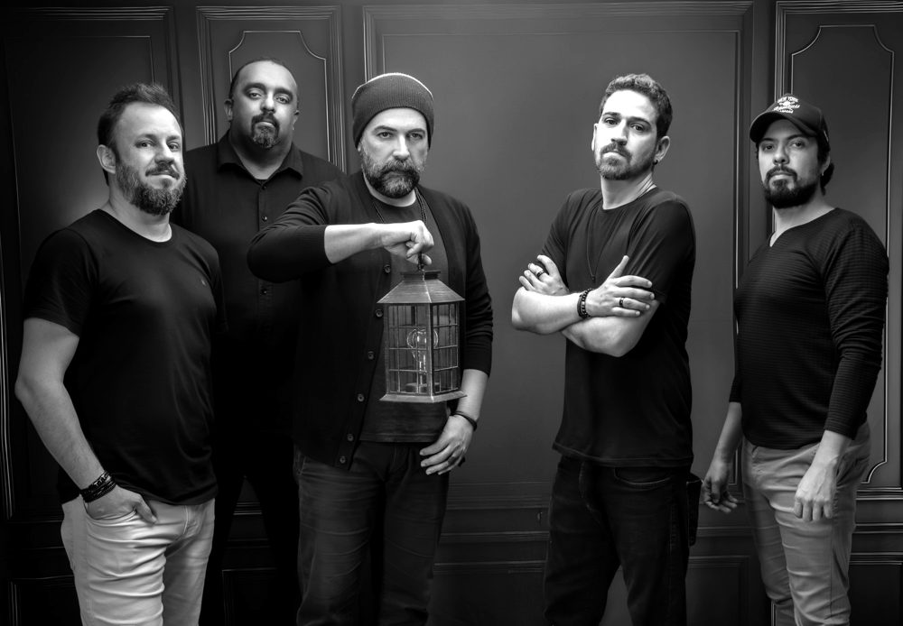
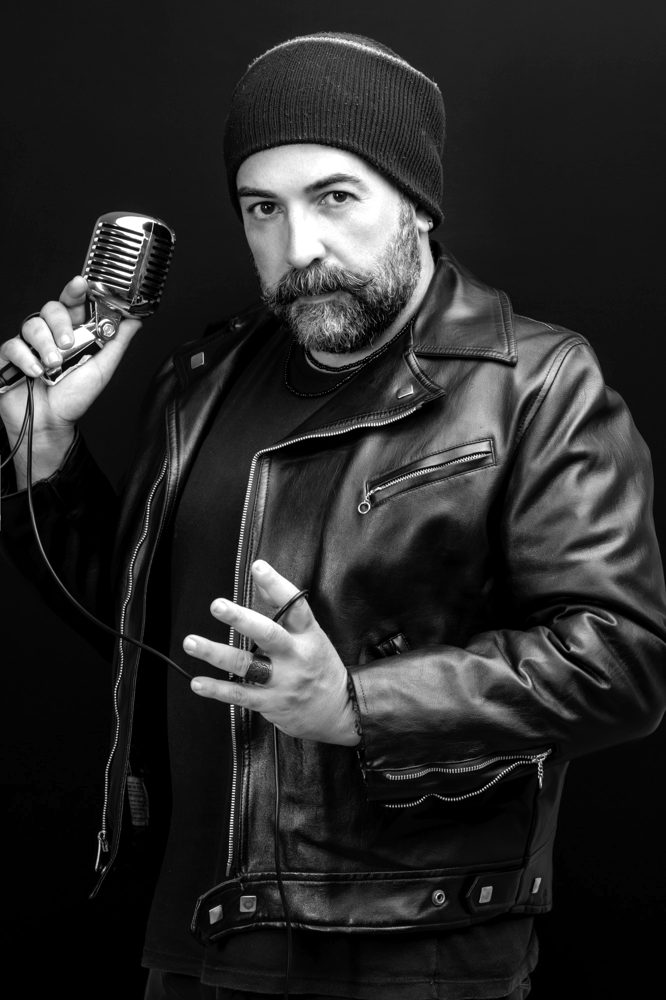
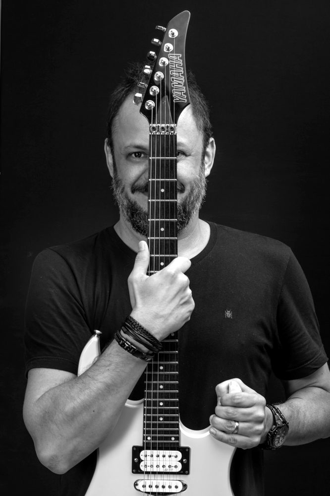
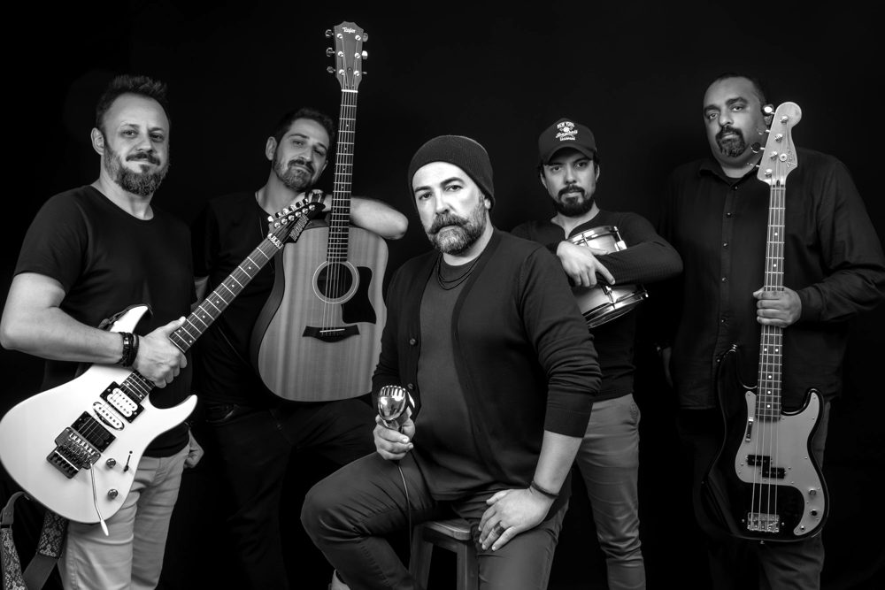

Resumo
Maturidade artística, força sonora e novo capítulo. Depois de um hiato, a Ordem Mor volta com repertório autoral sólido e identidade ainda mais definida.
Conhecida pelo som potente e por letras que misturam introspecção e crítica social, a banda equilibra intensidade e profundidade emocional. O repertório também traz releituras de clássicos nacionais e internacionais.
Ao vivo, o show é entrega total: presença firme, execução consistente e uma construção sonora que prende a atenção do início ao fim.




Destaques
- Trabalho autoral consistente
- Nova fase artística
- Show intenso e emocional
- Releituras de clássicos nacionais e internacionais
Ideal para casas de show, festivais e eventos de médio e grande porte.
Formação
- Bruno BizonniVocal
- Athos TibãesGuitarra solo
- Filipe MamedeGuitarra base
- Marcus FilipeBaixo
- Jackson LopesBateria
Ouça e veja